∂ Ambitus — revisão 2
Tudo o que entrou desde a revisão 1: a ponte com o Summa e a rodada “o máximo que der, sem bloat”. As capturas são do app de verdade (Xvfb, caderno de exemplo). Nada foi enviado ao remoto.
- Busca na escrita à mão
- Mandar a página ao Summa
- Converter escrita em texto
- Copiar página como imagem
- Uma tecla por ferramenta
- Segurar para endireitar
- Paleta de comandos
- Versões anteriores
- No Summa
- Revisão de código
- Decisões suas
Atalhos novos
| Atalho | O quê | Onde no menu |
|---|---|---|
| Ctrl+/ | Paleta de comandos | Editar |
| Ctrl+Shift+C | Converter a escrita selecionada em texto | Editar |
| Ctrl+Shift+M | Mandar a página ao chat lateral do Summa | Arquivo |
| P M E S T X | Caneta, marca-texto, borracha, laço, texto, LaTeX | — |
| caneta parada ~0,5 s | Endireita o traço | — |
| sem atalho | Copiar página como imagem · Versões anteriores… | Editar · Arquivo |
1. Busca na escrita à mão
A Biblioteca acha o que foi escrito à mão
Com a leitura ligada no Summa, o Ambitus manda ao Summa, uma por vez e em segundo plano, as páginas cujos traços mudaram. O Summa lê com o modelo de visão que você já usa lá e devolve o texto, que entra no índice. Na busca, os achados vindos da tinta aparecem com “· escrito à mão”, e uma linha embaixo diz em que pé está a leitura.
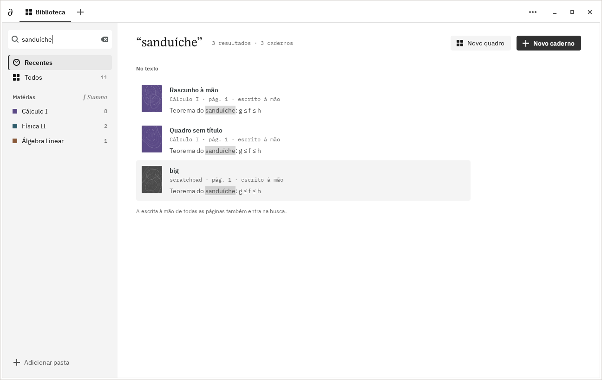
- Nada sai da máquina sem o interruptor do Summa. Modelos grátis e o motor Claude não leem notas.
- Páginas acima de 8 MB em PNG são recusadas. A reindexação espera a rodada de leitura terminar (até 90 s).
- Ainda não medimos o acerto na sua letra de verdade.
2. Mandar a página ao Summa
A página aberta vira pergunta no chat lateral
Salva o caderno se for preciso e manda o caminho e o número da página ao Summa. O Summa traz a janela para a frente e põe um rascunho no chat lateral; o tutor relê o caderno pelo caminho. Com o Summa fechado, um aviso diz o que fazer:
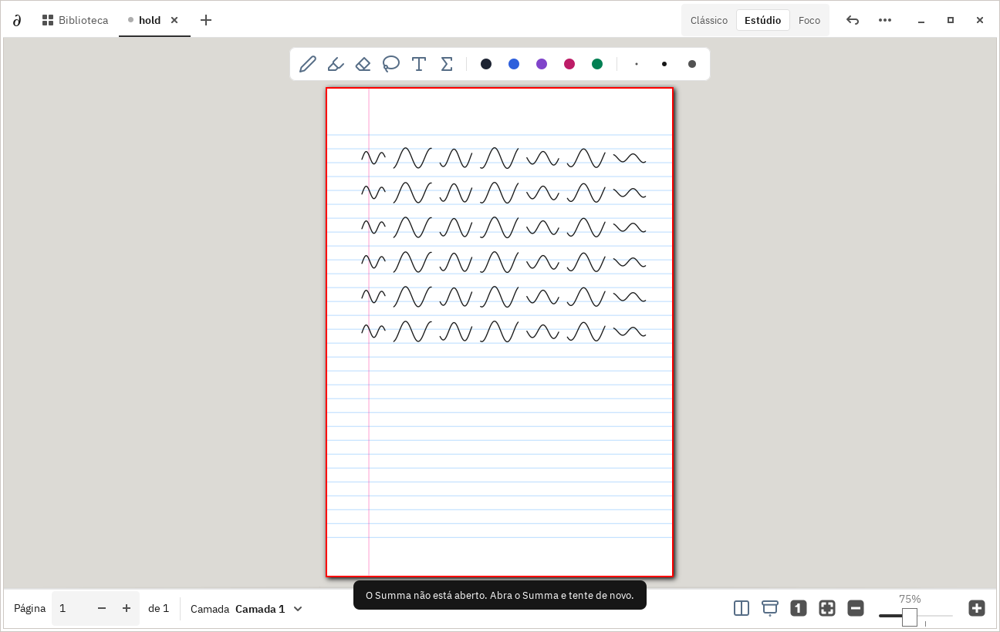
Do lado do Summa, veja a seção “No Summa”.
3. Converter escrita em texto
Laço na escrita → texto no lugar
A seleção é lida pelo Summa e trocada por uma caixa de texto na mesma posição. Um Ctrl+Z traz os traços de volta.
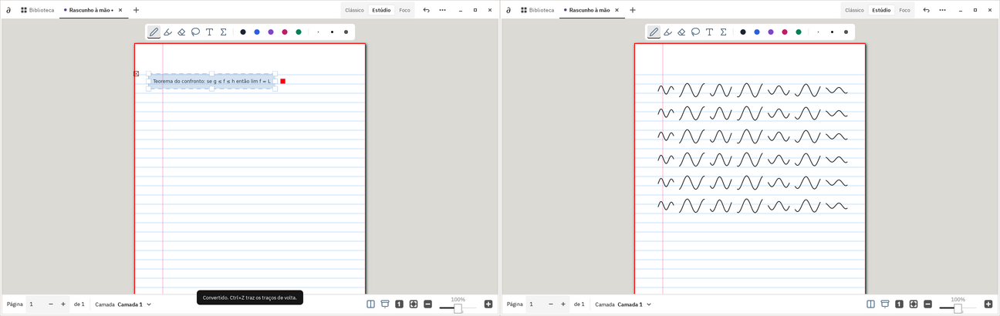
- Fórmulas viram texto com
$…$, não LaTeX renderizado. Usa a mesma leitura (e o mesmo interruptor) da busca.
4. Copiar página como imagem
A página na área de transferência, pronta para colar
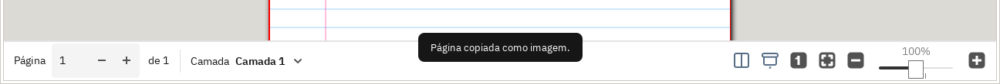
O aviso.
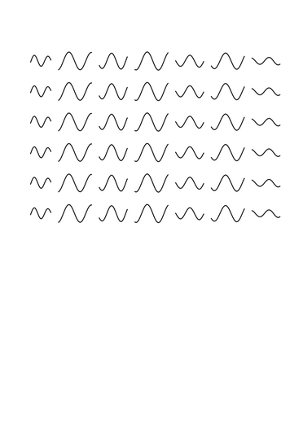
O que foi colado: PNG de 150 dpi, fundo branco, com PDF e sem a pauta. Num quadro, só a parte escrita.
5. Uma tecla por ferramenta
P caneta · M marca-texto · E borracha · S laço · T texto · X LaTeX
Só valem com o foco na página e sem texto em edição: digitar “pet sxm” dentro de uma caixa de texto não troca a ferramenta. As dicas da paleta do Estúdio mostram a letra (“Caneta (P)”). h j k l (rolagem) e os números (cores) seguem como no Xournal++.
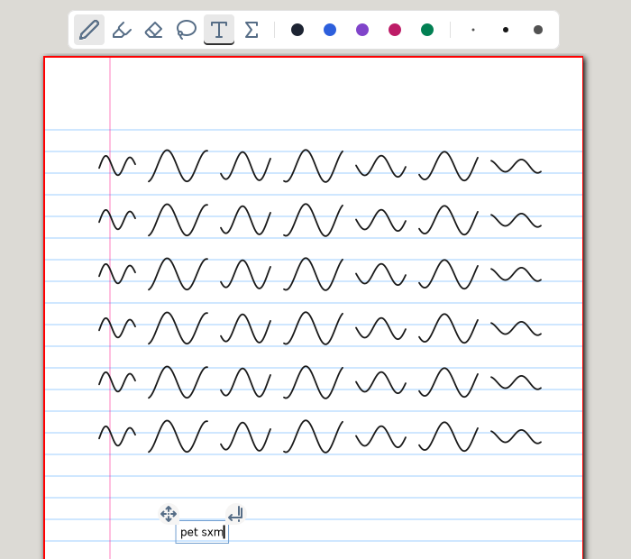
6. Segurar para endireitar
Desenhe, pare a caneta, e o traço vira a forma
Usa o reconhecedor de formas do Xournal++ (reta, retângulo, círculo, triângulo, seta). Se o traço não é uma forma, nada acontece.
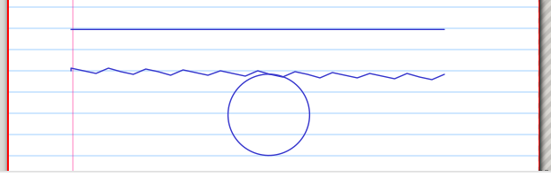
De cima para baixo: reta segurada no fim, a mesma reta sem segurar e um círculo à mão segurado.
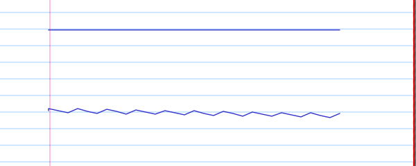
Em cima, depois de segurar; embaixo, depois de um Ctrl+Z, com o traço à mão de volta.
7. Paleta de comandos
Qualquer item do menu, pelo nome
Não liga para acento nem maiúscula. Mostra só o que dá para fazer agora, o caminho no menu e o atalho de cada comando, para aprender. ↑↓ escolhem, Enter roda, Esc ou um clique fora fecham.
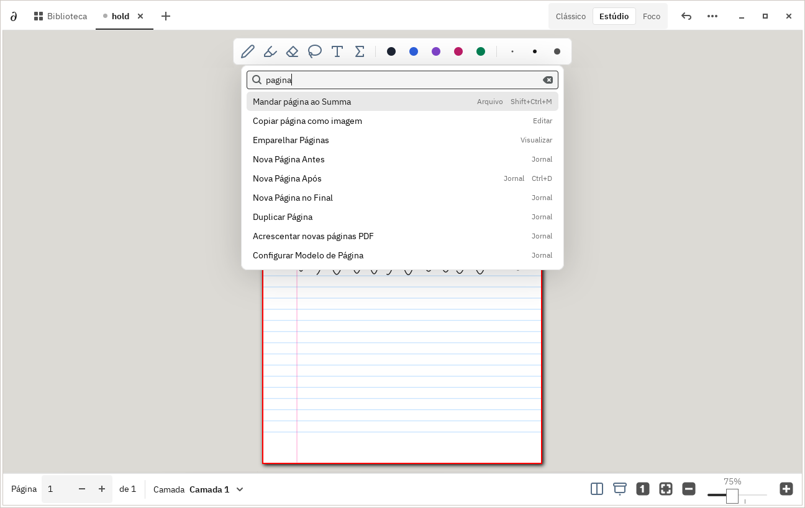
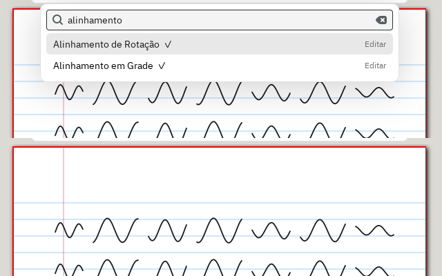
As opções ligadas têm ✓. Embaixo, a paleta fechada com Esc.
8. Versões anteriores
O caderno como estava, a cada salvamento
Antes de cada gravação, o arquivo como estava vai para a pasta de dados do Ambitus (no máximo uma cópia a cada 10 min; ficam as 30 mais novas). A pasta dos cadernos, que o Summa lê, não ganha nada, e o .xopp não muda.
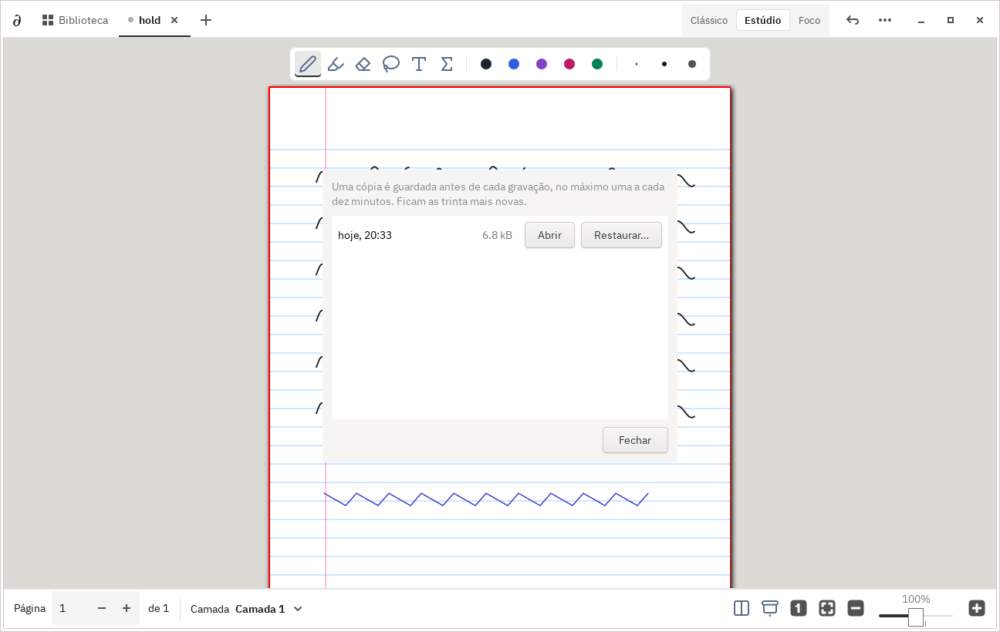
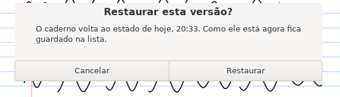
Restaurar… pede confirmação e guarda o estado de agora.
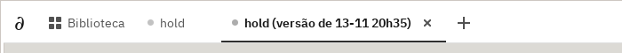
Abrir põe uma cópia numa aba própria.
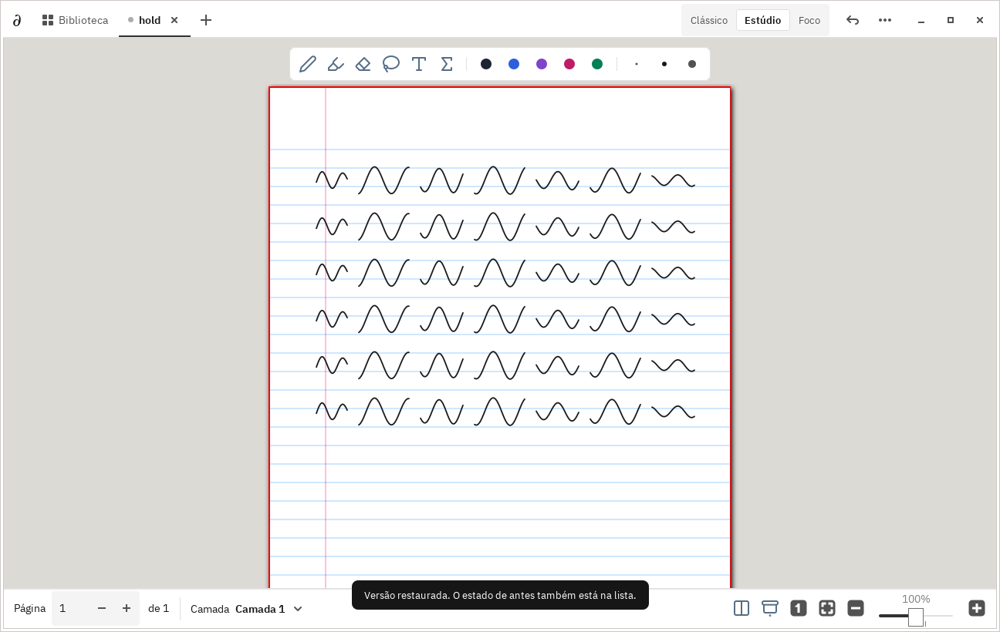
- Só a gravação de verdade cria versão; o salvamento automático, não.
- A cópia aberta numa aba fica no cache: salvar nela não muda o caderno.
9. No Summa
O interruptor da leitura
Em Configurações → Recursos da mesa. Desligado por padrão. Ao ligar, o Summa confere se o seu modelo é pago e enxerga imagens; se não for, não liga e diz o motivo.
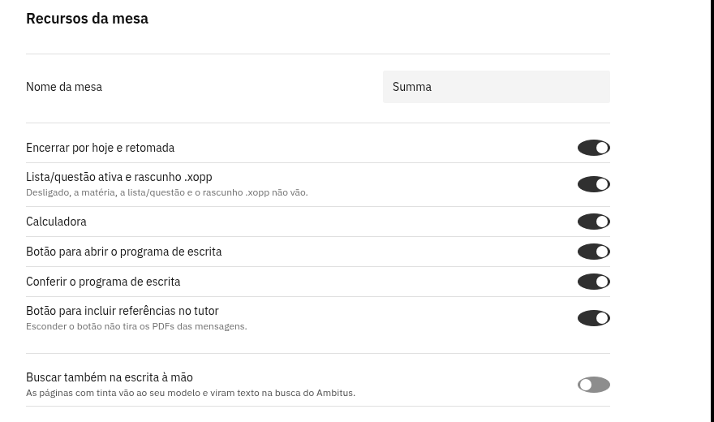
A página chegando no chat lateral
O Summa vem para a frente com o rascunho pronto e o cursor no fim. Nada é enviado sozinho: você escreve a pergunta e aperta Enviar.
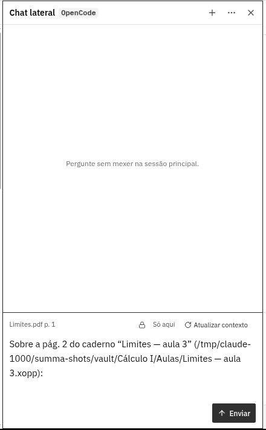
- O rascunho traz o caminho inteiro do arquivo (o tutor precisa dele para reler o caderno). Ver as decisões.
10. Revisão de código
| Achado | Gravidade | Estado |
|---|---|---|
| Segurar com o laser pointer deixava tinta na página e derrubava o app ao soltar | alta | corrigido: só a caneta |
| Restaurar a versão mais antiga com a lista cheia apagava essa versão antes de copiá-la | alta | corrigido: a versão vai antes para perto do caderno |
| Restaurar sobrescrevia o caderno mesmo sem conseguir guardar o estado atual; a escrita não era atômica | média | corrigido: aborta com aviso; troca por rename |
| Copiar página saía sem a seleção e sem o texto em edição | média | corrigido |
| Enter logo depois de digitar na paleta rodava um item da lista antiga | média | corrigido |
| Disco cheio: cópia pela metade e diálogo de erro a cada gravação | média | corrigido: confere o espaço e apaga o resto |
| Abrir a mesma versão duas vezes sobrescrevia a cópia já editada | baixa | corrigido |
| Fechamento adiado da paleta sem dono; Alt+Tab fechava a paleta | baixa | corrigido |
| Segurar na última página não cria a página nova automática | baixa | aberto |
| Mover ou renomear o caderno deixa o histórico de versões para trás (a chave é o caminho) | limite de desenho | aberto |
Retestado no Xvfb depois das correções: Enter rápido na paleta, restaurar a versão mais antiga, segurar com a caneta. 189 testes de unidade passando.
11. Decisões suas
Segurar para endireitar: interruptor?
Hoje está sempre ligado. Se atrapalhar quando você para no meio de uma conta, ponho um item em Ferramentas para ligar e desligar.
Página copiada: com ou sem pauta?
Hoje vai sem pauta, igual ao que o tutor vê. Com pauta, fica igual à tela.
Fita de estudo: sim ou não?
Uma faixa que esconde a resposta até você tocar nela. Precisa de uma convenção nova no arquivo (uma camada com nome especial). O Xournal++ abriria o caderno normalmente, mas veria a faixa como um retângulo comum. Ficou de fora para evitar bloat.
Caminho do arquivo no rascunho do chat
Hoje o rascunho mostra “(/home/…/Limites — aula 3.xopp)”. Dá para esconder o caminho do texto e passá-lo ao tutor por fora, deixando só “Sobre a pág. 2 do caderno ‘Limites — aula 3’:”. A mudança é no Summa.
Converter e mandar ao Summa no menu radial?
O anel do botão direito tem só ferramentas. Dá para pôr “Converter” quando há seleção e “Mandar ao Summa” sempre.
Depois desta revisão
A rodada de UI começa pela barra de ferramentas poluída. Depois vêm canetas favoritas, barra da seleção, toque de novo para opções e o texto “Xournal++ travou”. Tudo com protótipo aqui antes de implementar.